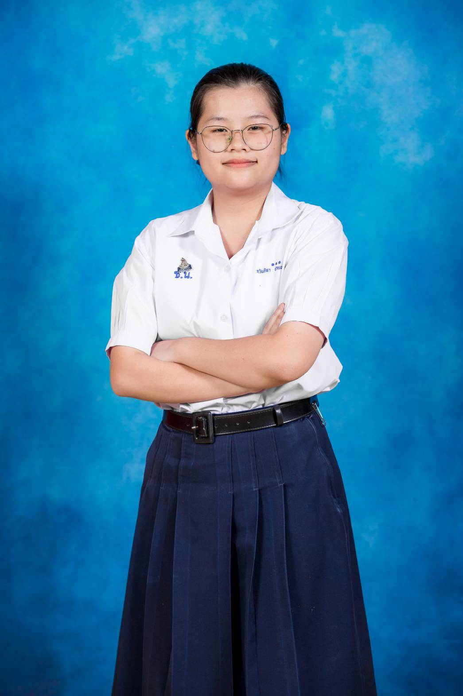

ชื่อ นางสาวกวินธิดา ปานเพชร
รหัสนักศึกษา 6909686195
หลักสูตร วิทยาศาสตรบัณฑิต สาขาวิชาวิทยาการคอมพิวเตอร์
งานอดิเรก
ชื่อ นางสาวกวินธิดา ปานเพชร
รหัสนักศึกษา 6909686195
หลักสูตร วิทยาศาสตรบัณฑิต สาขาวิชาวิทยาการคอมพิวเตอร์
งานอดิเรก
Title : A1: My First Learning Portfolio
Type : Course Assignment
Date : 30 ส.ค. 2569 เวลา 23.59 น.
Role : Individual Developer
Description : พัฒนาเว็บMy profile โดยใช้HTML และ CSS
Skills : HTML, CSS
Reflection : ตอนทำเว็บ My Profile ได้ฝึกสร้างเว็บด้วย HTML และ CSS ทำให้เริ่มเข้าใจหลักการทำงานของทั้งสองตัว ตอนแรกมีปัญหาเรื่องการจัดกล่องให้วางข้างกันและมีขนาดเท่ากัน แต่พอลองปรับ border, margin และ padding ทีละจุดก็เข้าใจมากขึ้น ถ้าพัฒนาต่ออยากเพิ่มลูกเล่นและตกแต่งเว็บให้น่าสนใจขึ้น
Evidence : GitHub Repository
,
Deployed Website
Title : โครงการศูนย์โอลิมปิกวิชาการ ค่าย 1 สอวน.
Type : Certificate
Date : 6 ตุลาคม - 21 ตุลาคม 2567
Role : Camp Participant
Description :เป็นค่ายอบรมและคัดเลือกผู้มีความสามารถพิเศษทางวิชาการ สาขาคอมพิวเตอร์ โดยได้เรียนรู้เนื้อหาด้านการเขียนโปรแกรมภาษา C และ C++
Skills : C , C++
Reflection : เรียนและทำโจทย์เพื่อคัดเลือกตัวแทนเข้าค่าย 2 โดยการฝึกเขียนโปรแกรมภาษา C และ C++ จนได้เรียนรู้ในสิ่งที่ยังไม่รู้เพิ่มขึ้น ถึงแม้จะรู้สึกตามเพื่อนไม่ทันบ้างจึงกลับไปฝึกเพิ่มที่ที่พักและอยากทำความเข้าใจ C++ ให้ลึกขึ้นกว่านี้
Evidence : คลิกเพื่อดูเกียรติบัตร
ความท้าทายที่เจอคือการจัดรูปแบบของwhat i built และ how i built ให้สามารถวางข้างๆกันได้ และทั้งสองกรอบมีความยาวและความกว้างที่เท่ากัน รับมือโดยการถามchatgpt ว่าคำสั่งอะไรที่ทำให้เราสามารถวางกล่องไว้ข้างกันได้ ปัญหาที่พบเจออันถัดมาคือ กล่องทั้งสอง มีความกว้างและยาวไม่เท่ากัน แก้โดยการลองปรับborder margin padding ไปเรื่อยๆจนกว่าจะเจอจุดที่ใช่
ทำให้รู้คำสั่งcssมากขึ้น รู้ว่ามีคำสั่งให้ใช้เยอะมากๆ และได้เข้าใจหลักการการทำงานของhtmlและcssมากขึ้น
อยากเพิ่มลูกเล่นและตกแต่งเว็บให้มากกว่านี้ เพราะรู้สึกว่ามันดูโล่งมีแต่ตัวหนังสือ อยากให้เว็บดูน่าสนใจมากขึ้น